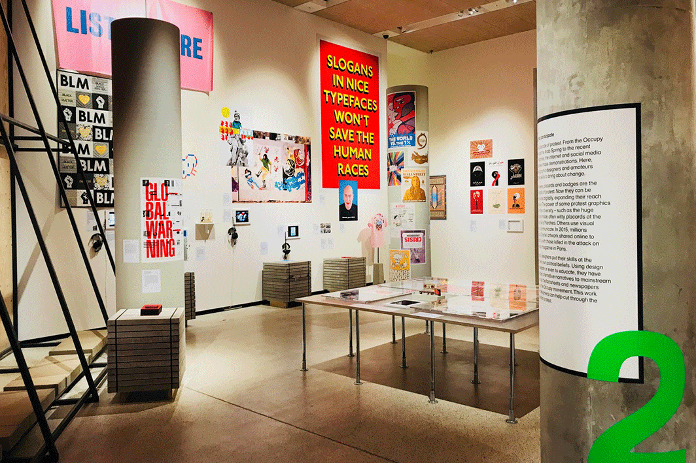
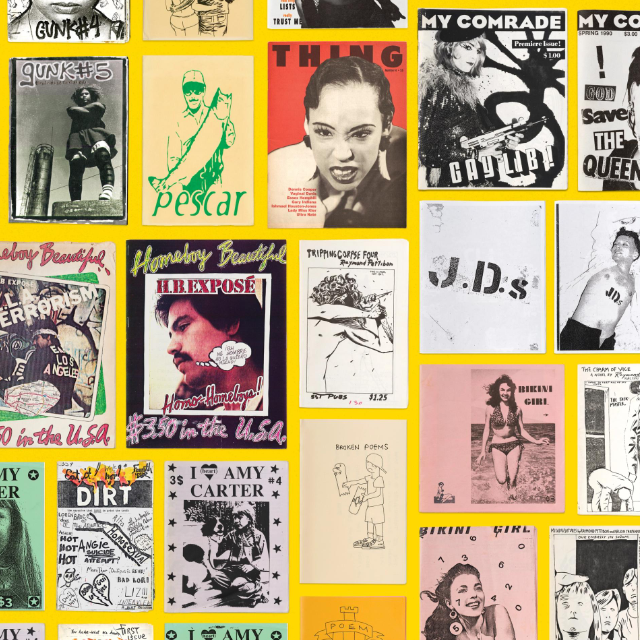
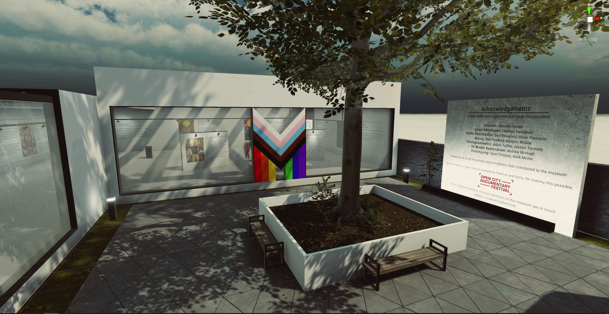
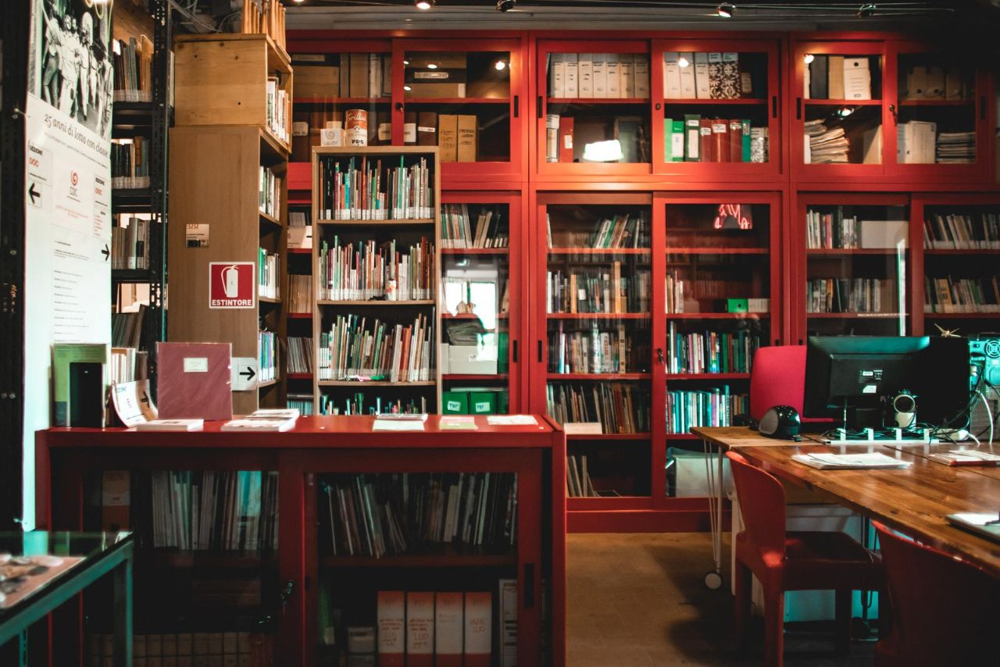
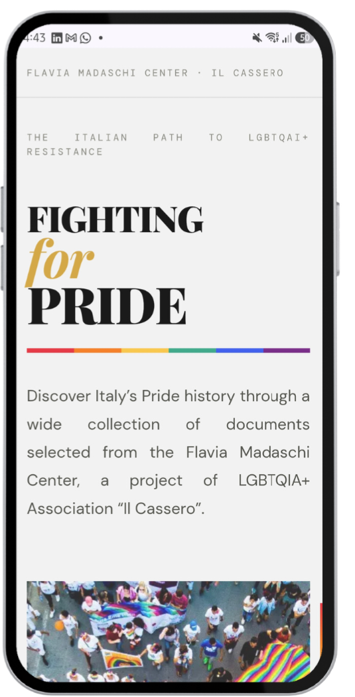
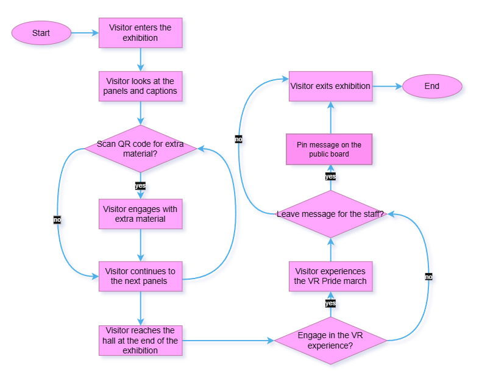
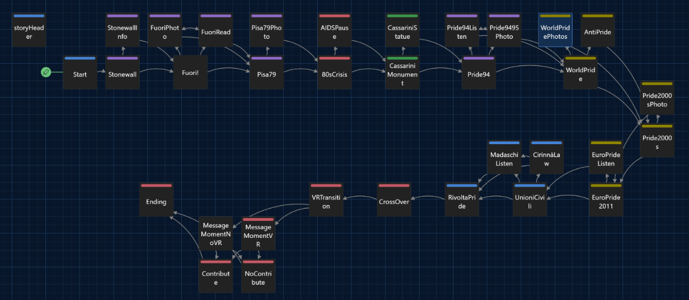
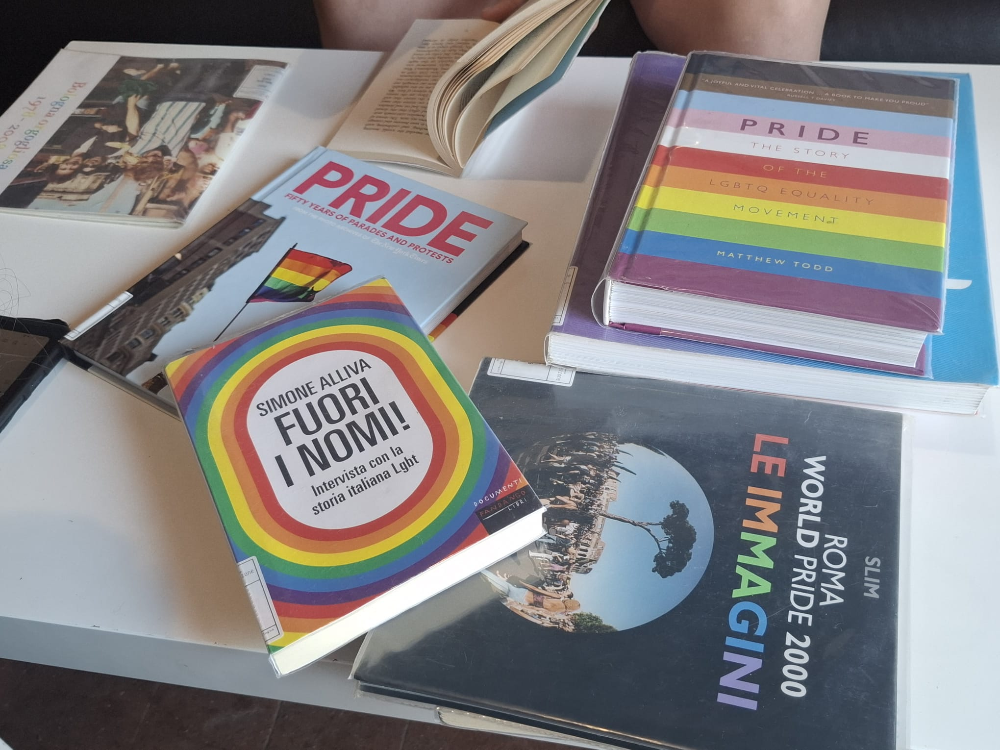
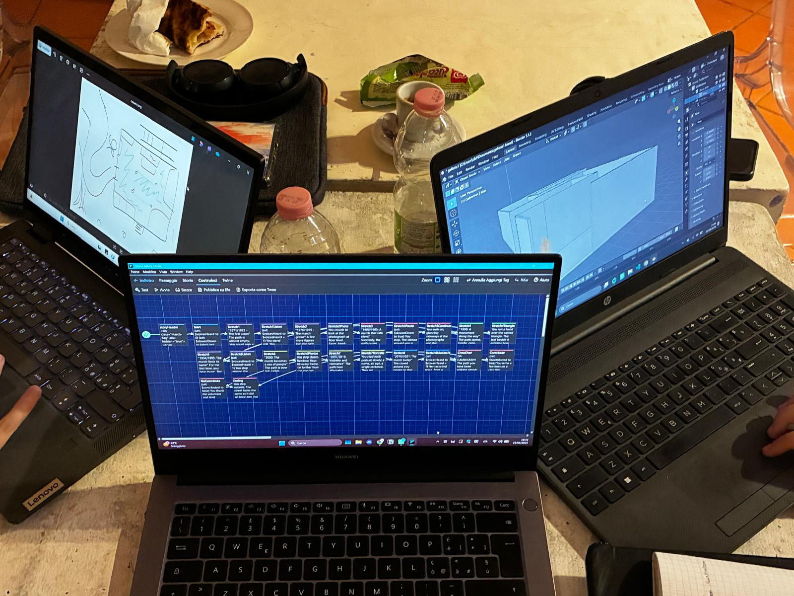
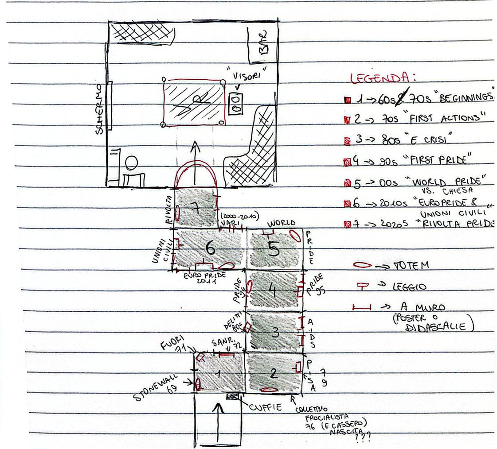

Project Introduction
Fighting for Pride is a hybrid phygital exhibition taking place at Cassero LGBTQIA+ Center, developed in collaboration with the Documentation Centre “Flavia Madaschi”, one of the largest LGBTQIA+ community archives in Europe. The main objective of the exhibition is to inform the visitor about the most important steps of Italian LGBTQIA+ history that led to the establishment of Pride in our country.
Centro Documentazione Flavia Madaschi
The Flavia Madaschi Center is the largest European community archive regarding queer history and civil rights.
The center is named after Flavia Madaschi, the mother of a gay son and a member of A.GE.DO (Association of Parents, Relatives and Allies of LGBTQ People).
Among its valuable resources, the archive holds approximately 21,000 books, 10,000 audiovisual materials, and 5,000 posters and graphic materials regarding LGBTQIA+ history and activism.
Pain Points
The exhibition responds to four main problems, that were identified through on-site visits, benchmark research, discussion with Cassero's staff:
- Cassero regulars aren't aware of the archive's existence, missing crucial information on Italian Pride.
- The archive does not have a dedicated space for exhibitions. It does have a court outside, and a hall dedicated to events.
- A large portion of the material preserved by Cassero is multimedial, making them difficult to display in a traditional sense.
- The archive is so large that it may be hard to browse through the digital content without guidance.
See our preliminary notes here
Benchmark

Hope to Nope: Graphics and Politics 2008–18
The reference: An exhibition exploring how graphic design has shaped and reflected global political movements during one of the most turbulent decades of the 21st century.
The gap: Lack of multimedia elements. The exhibition was not rendered digitally so it is no longer accessible.

Copy Machine Manifestos: Artists Who Make Zines
The reference: The first exhibition dedicated to zines, displaying marginalized people's influence in history through an art medium, in this case DIY publications.
The gap: Little insight into the evolution of digital DIY publishing such as webzines, blogs, and other digital platforms

LGBTQ+ VR Museum
The reference: An immersive virtual reality museum that showcases LGBTQIA+ stories, artworks, and personal artefacts from around the world.
The gap: It focuses heavily on personal, individual narratives rather than exploring the broader context.

Centro Documentazione Flavia Madaschi
The reference: A community archive and documentation center that provides access to the historical and cultural heritage of the Italian LGBTQIA+ movement through books, posters, audiovisual materials.
The gap: The center prioritizes documentation and preservation, making its rich collection less accessible and engaging.
Project Innovations
By observing benchmark projects, it has been observed that while some have successfully combined physical displays with digital elements, many of their online resources are no longer available, limiting their long-term impact and accessibility.
Thus, Fighting for Pride proposes a hybrid approach by combining a physical exhibition with a permanent digital archive, making Italian LGBTQIA+ history more accessible, engaging, and sustainable. This is done by integrating the exhibition with a searchable digital archive that remains available beyond the exhibition's duration. Rather than presenting archival material as static records, the project transforms them into an interactive experience.
Design and Components
The design process unfolded in four phases:
- Briefing: Preliminary decisions about the exhibition's topic, its placement and components.
- Research: On-site visit to the Center, discussions with the staff, gathering of informations through memoirs, photographic books, and other resources provided by the Center.
- Ideation: Establishment of the exhibition, development of the WebApp on Figma and the 3D model on Blender. Creation of the captions relating to the selected materials.
- User journey: Development of the user journey on Twine, flowchart and swimlane chart to show components interaction.
3D Model
A 3D model of the exhibition was built on Blender to show how the exhibition and its path would look in real life. The posters, photographs, and captions detail Italian Pride history in a path resembling a Pride march, eventually ending in the hall where the VR experience is placed.
Access the .blend file here
WebApp

The WebApp accompanies the visitor and provides most of the digital material of the exhibition; by scanning the QR codes scattered on the panels, the visitor can open it and thus access the extra material stored there, such as browsable, digitized magazines, and speeches.
Access the WebApp here or by scanning the QR code.
VR Experience
At the end of the exhibition, visitors reach a hall where they can engage in a VR experience involving a 360° video of Rome's 2016 Pride march.
Watch the 360° video here.
Read the full design brief here
User Flow and Experience
The visitor's journey through Fighting for Pride allows a single, uninterrupted physical path. The parallel physical and digital layers operate simultaneously. The visitor has the option to stay at the physical level (walking, reading panels), engage digitally (scanning QR codes to access extra content on the WebApp), or go even deeper (engaging with the VR experience at the end of the exhibition).
The flowchart below shows the general user flow:

Along with the flowchart, a Twine narrative was developed in order to show the user journey during a hypothetical visit to the exhibition:

Play the Twine story here:
The Team
Research at the Documentation Center.

Planning the exhibition.

Final draft for the exhibition.

The team while doing research at Pride 2026.